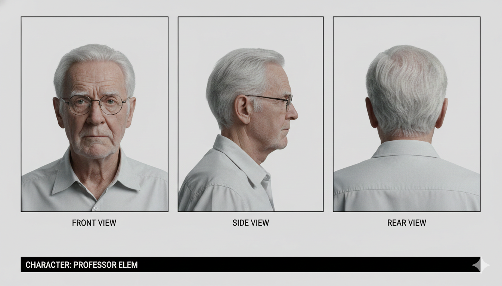

Seedance 2.0とKling 3.0、2強時代の動画生成AIの使い方を学びます
💡動画をピクチャインピクチャ機能で再生しながら、学習を進めてください。
プロンプトを入力するだけで、素人でも動画を作れる時代が到来しました。AI技術の進化は驚異的なスピードで進んでいますが、今から動画生成を始める方にとって、必要なツールは既に揃っています。
なお、動画生成はスマホよりもPCでの作業を強くおすすめします。
このレッスンは、AI動画制作をこれから始めてみたい方向けの内容です。まずは、個人レベルでもここまで作れるという例を3つご覧ください。
私がAIで制作した作品です。宇宙で孤独に暮らす老人の物語を、動画生成AIだけで映像化しました。
アニメ調の作品もこのクオリティで作れます。
実務寄りの例として、企業CMもAIで作れます。
動画生成AIは現在、Seedance 2.0とKling 3.0の2強です。この2つを押さえておけば、個人の作品制作から実務まで十分カバーできます。
TikTokを運営するByteDanceが開発。アニメ・2D表現では頭ひとつ抜けた存在で、先ほどの「才無し侯爵令嬢」のようなアニメ作品を作るなら第一候補です。
Seedance 2.0の特徴
中国の快手（Kuaishou）が開発。実写系の質感・物理表現に強く、「宇宙灯台守」もKlingを軸に制作しています。
Kling 3.0の特徴
2強のうち、最初に触るべきはKlingです。理由はシンプルで、公式サイトに登録するだけで無料枠が使えるから。毎日クレジットが付与されるので、お金をかけずに動画生成を体験できます（無料枠の生成には透かしが入ります）。
まずはKlingの公式サイトで会員登録を済ませましょう。
プロンプトは英語だと精度が高まりますが、自分で書く必要はありません。ChatGPTにKling用のプロンプトを作らせるのが定石です。
また、動画生成ではレファレンス画像（AIが参照する元画像）が重要です。これを使わず適当に生成すると、毎回違うおじいさんが出てきてしまい、シーンをつなげた時に違和感が出ます。
まず、以下のサンプル画像（おじいちゃんの3面図）をダウンロードしてください（右クリック→「名前を付けて画像を保存」）。このような正面・横・後ろの3面図にしておくと、AIがキャラクターの見た目を立体的に理解でき、一貫性が保ちやすくなります。

数十秒〜数分待つと、おじいさんが石炭をくべる動画が出来上がります。これが動画生成の基本の流れ。「画像を作る→ChatGPTでプロンプト化→動画AIで動かす」の3ステップです。前レッスンの画像生成が、ここで活きてきます。
動画生成AIはクレジット制が基本です。720p・15秒の動画1本あたりの目安はこのくらいです。
720p・15秒あたりの費用感
※為替やプランで変動します。あくまで肌感として捉えてください。
この価格差を踏まえたおすすめの使い分けは、「普段の試行錯誤と実写系はKling、アニメの決めカットはSeedance」。動画生成は何度もやり直すのが前提なので、まず低解像度・短尺で構図を試し、採用するカットだけ高解像度で本番生成するのがクレジット節約の定石です。
現時点での主な課題は、音声やセリフの生成です。
特に日本語の音声は、同時生成されると不自然になることが多いです（英語はほぼ問題なし）。この問題は、別生成した音を動画の喋りの部分に載せる「リップシンク」機能で改善できます。
💡 音声生成について
※音声生成の詳細は、「音声生成」のレッスンで解説します。
動画編集ソフトを使いましょう。
難しそうに聞こえますが、要は10秒程度のシーンを複数、意味が通るように並べるだけです。
初めての方には、無料のShotCutというソフトがおすすめです。切って貼って動画を作ってみてください。動画で実際のやり方をお見せします。
私自身はMacのFinal Cut Proを愛用しています。
💡 ShotCutで出来ること
作品の核となるイメージやメッセージを持つこと、そして楽しむことです。
私は「宇宙灯台守」を制作する際、「宇宙で孤独に暮らす老人が、孫娘の精神体と再会した時の感情」を描きたいという衝動がありました。そういった、核となるシーンを作りたいという想い。
同じくDiscordで共有された赤獅子屋さんの記事も大変勉強になります。
動画作りで一番大事なのは、楽しさです。これに尽きます。
自分ですごい映像を作れるという興奮を、楽しく追い求めていってください。